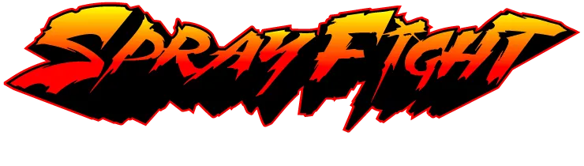

SprayFight System
The Graffiti Battle System by TORB
Concept
Graffiti has always drawn attention — through its scale, color, and detail. But the process often takes hours, making it slow and less engaging for viewers.
At the same time, bombing exists — fast graffiti focused not on perfection but on presence: “I was here.” Tags, throw-ups, simple fonts, or characters.
People love to watch graffiti being created, and writers love to compete — to do it better, faster, and bolder. Battles existed before, but they lacked a unified system — every city and country did it differently.
System Goals
- Make the process engaging for the audience;
- Make it exciting for artists to compete and win;
- Keep it dynamic, understandable, and true to the street spirit.
Format
16 artists participate. A knockout bracket decides the winner. Each round brings a new challenge and limited time — simulating real street conditions.
Rounds
Top 16
- Time: 30 seconds
- Task: random word (tag)
- Goal: show style, speed, confidence
Top 8
- Time: 1 minute
- Task: random word, throw-up or simple letter form
- Color: one
Top 4
- Time: 1 minute 30 seconds
- Colors: two
- Task: random word, more complex form
- Judged by dynamics, balance, and cleanliness
Final
- Time: 3 minutes
- Colors: up to four
- Writers can switch names
- Creativity, confidence, and skill decide the outcome
(An optional 3rd place battle can be added.)
Judging
The panel consists of 3–5 respected graffiti artists. The main criteria are independence and a wide perspective on style. Judges evaluate:
- Letter structure and style;
- Dynamics and confidence;
- Presentation and originality.
Organization
If there’s no wall, use portable structures or replaceable panels. After each battle, helpers quickly cover previous works — not perfectly, just enough for the next round.
The format stays fast, raw, and alive.
Why It Works
Over five years of organizing graffiti battles, I’ve seen this format attract people to the culture. Viewers stay till the end — and more gather with every round.
It’s not just competition — it’s live creation, happening right before your eyes. The format makes graffiti more accessible to the public and motivates artists themselves.
Many participants — or even viewers — start improving their style or pick up a can for the first time.
This system not only reveals the best but also nurtures a new generation of graffiti writers while keeping the street spirit alive.
